TUNASWEEPER / LAB SUPPLY PROPS / UE 5.7연구소 · 보급 창고 12종
아래는 Blender 메시와 공유 아틀라스로 렌더한 실제 모델입니다. ImageGen 컨셉 이미지는 맨 아래에 별도로 보관했습니다. 각 이미지를 누르면 원본 크기로 열립니다.
실제 모델 · 개별 렌더
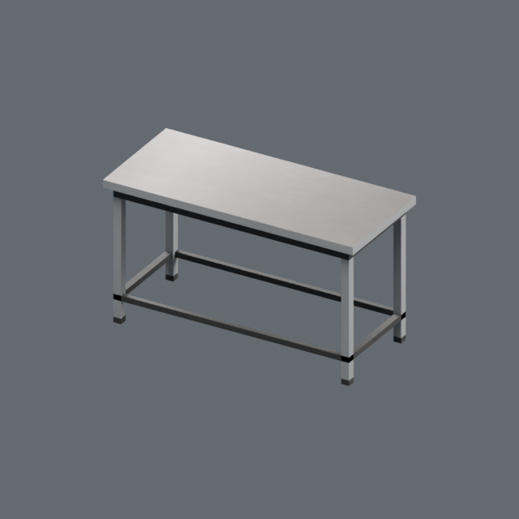
01 금속 작업대 · 160 × 70 × 90 cm · 204 tris · 1 slot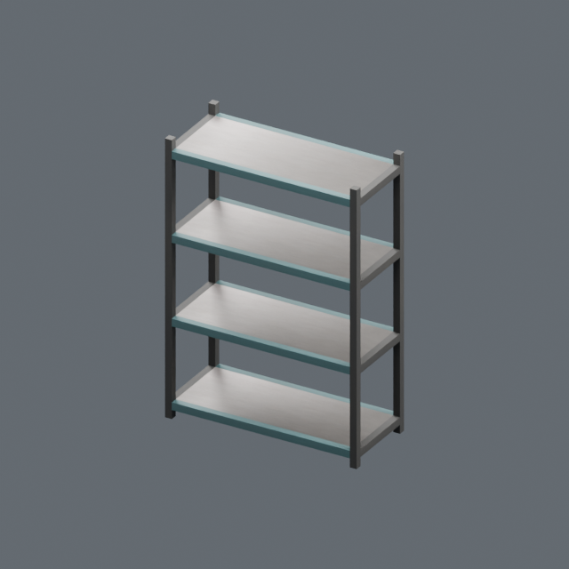
02 개방형 철제 선반 · 140 × 60 × 200 cm · 288 tris · 1 slot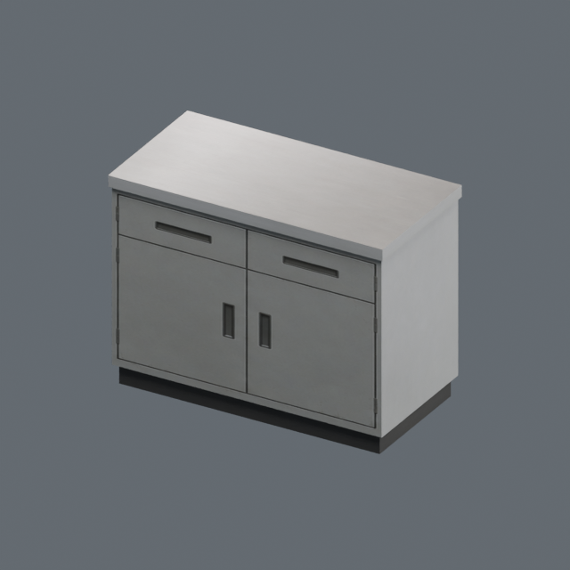
03 낮은 수납장 · 120 × 60 × 90 cm · 36 tris · 1 slot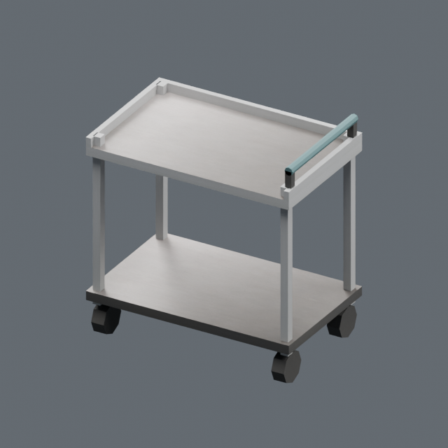
04 이동식 카트 · 80 × 50 × 85 cm · 272 tris · 1 slot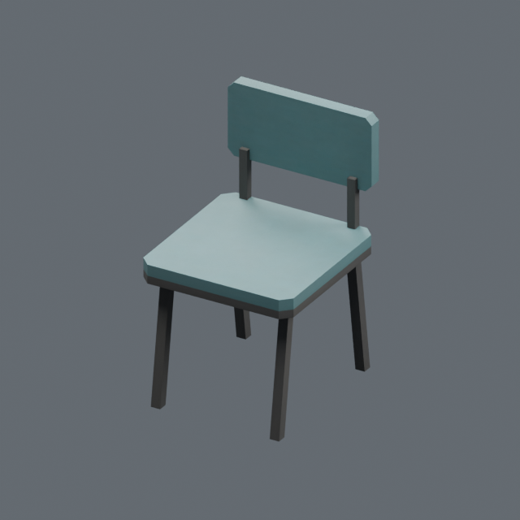
05 작업용 의자 · 48 × 52 × 80 cm · 156 tris · 1 slot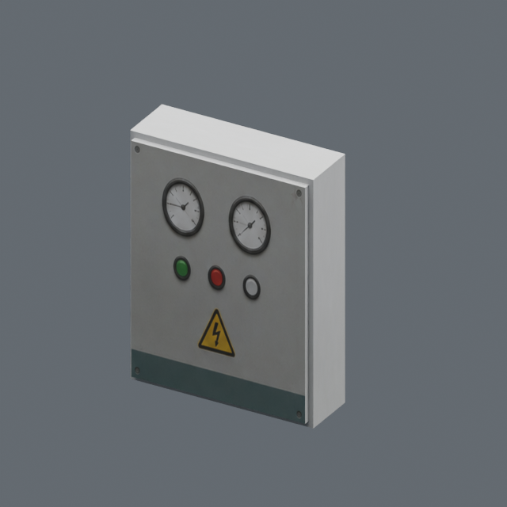
06 벽걸이 제어함 · 60 × 20 × 80 cm · 24 tris · 1 slot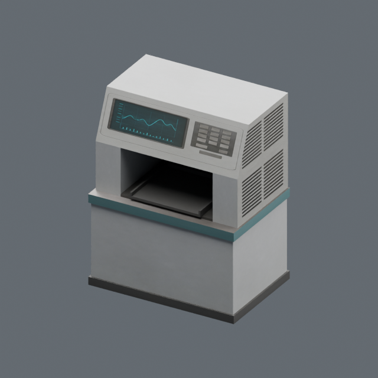
07 대형 분석 장비 · 120 × 80 × 150 cm · 144 tris · 1 slot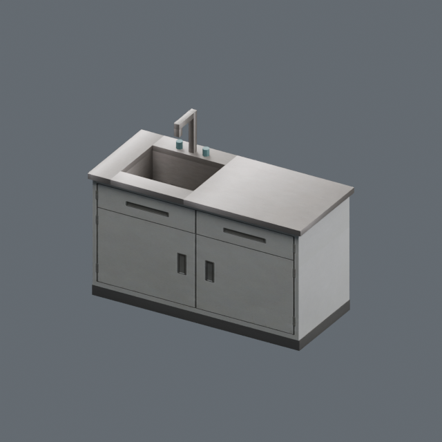
08 실험 싱크대 · 160 × 70 × 120 cm · 272 tris · 1 slot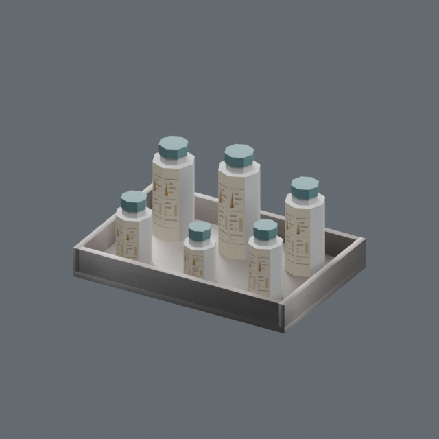
09 시료 용기·트레이 · 45 × 30 × 21.9 cm · 564 tris · 1 slot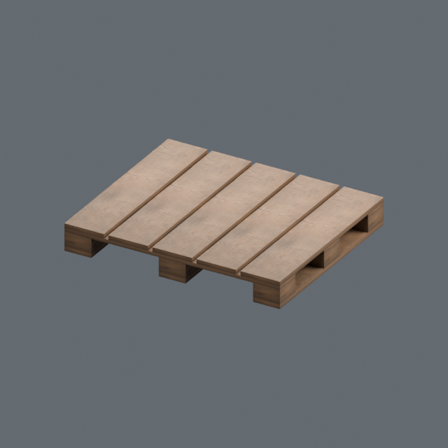
10 팔레트 · 120 × 100 × 15 cm · 240 tris · 1 slot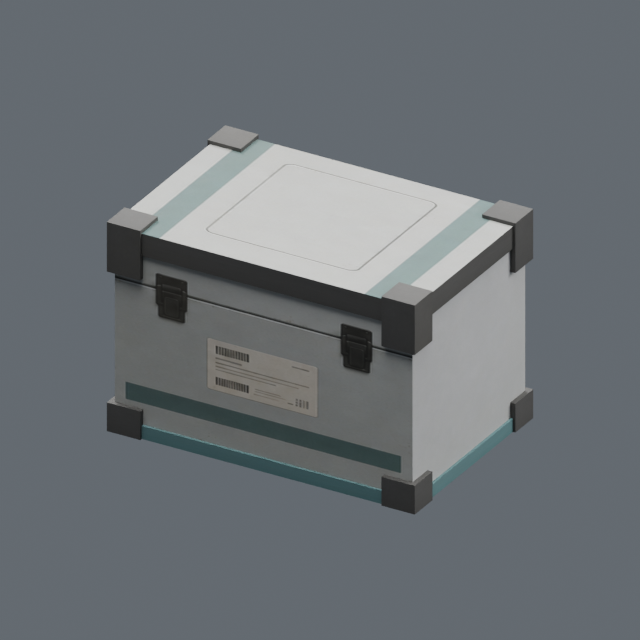
11 밀폐형 보급 상자 · 60 × 40 × 40 cm · 132 tris · 1 slot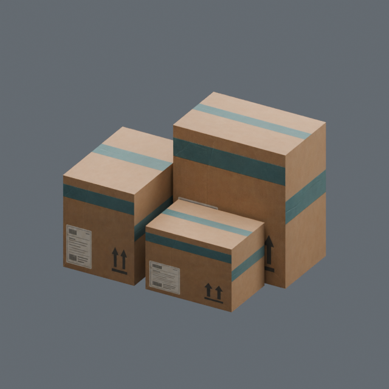
12 박스 적재 묶음 · 100 × 70 × 70 cm · 36 tris · 1 slot전체 모델 시트
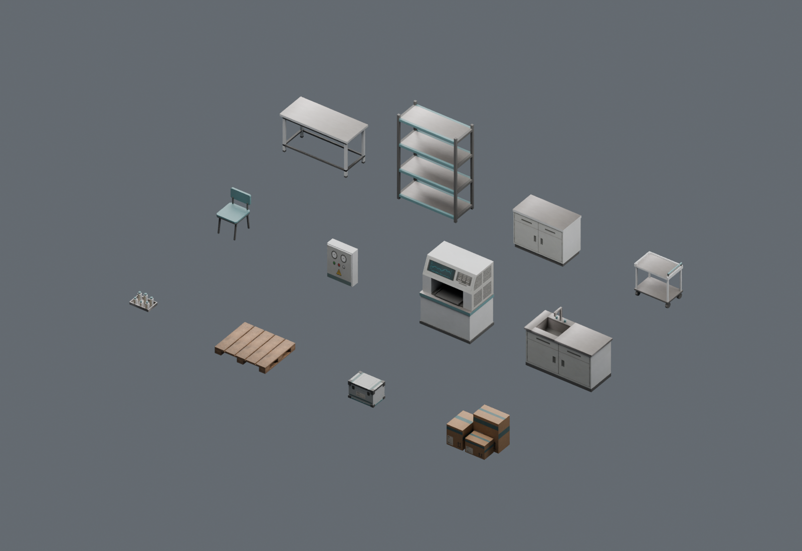
Blender actual geometry · 12 unique props · 2,368 triangles전용 공간 · 프로젝트 탑다운 카메라와 사선
기본 실내 모듈을 재사용한 8×8m 공간입니다. 천장과 보가 없습니다. 탑다운은 arm 1500cm, pitch −88°, yaw 0°, FOV 70°에 맞췄습니다. 높은 선반의 상판은 아래 적재물을 가리므로 벽면에 배치했습니다. 중앙 동선은 별도 UE 레이 검사 대상입니다.
UE 에디터 캡처
저장된 전용 맵의 카메라 캡처입니다. PIE나 FPS 측정 결과가 아닙니다.
기본 낡음 + 추가 오염
좌측은 ImageGen 아틀라스에 들어 있는 기본 사용감만, 우측은 공용 오염 마스크 강도 1.8을 더한 모습입니다. 기본 재질 강도는 0.35입니다. 넓은 오염 데칼과 투명 재질을 쓰지 않습니다.
측정 합계
| 장면 | 배치 | 삼각형 | 가구/소품 삼각형 |
|---|
| Lab | 44 | 3,876 | 3,424 |
| Warehouse | 62 | 5,188 | 4,736 |
12종 합계 2,368삼각형, 재질 슬롯 12개, 단순 충돌 박스 140개. 공통 Opaque 재질 하나는 2048² 아틀라스와 기존 1024² 오염 마스크를 2회 읽습니다. 표의 배치 합계에는 기본 벽·바닥·문틀을 포함하고 조명·카메라·크기 프록시는 제외합니다. 상세 검사와 한계는 검증 보고서를 확인하세요.
ImageGen 컨셉 레퍼런스 · 실제 모델 렌더와 구분
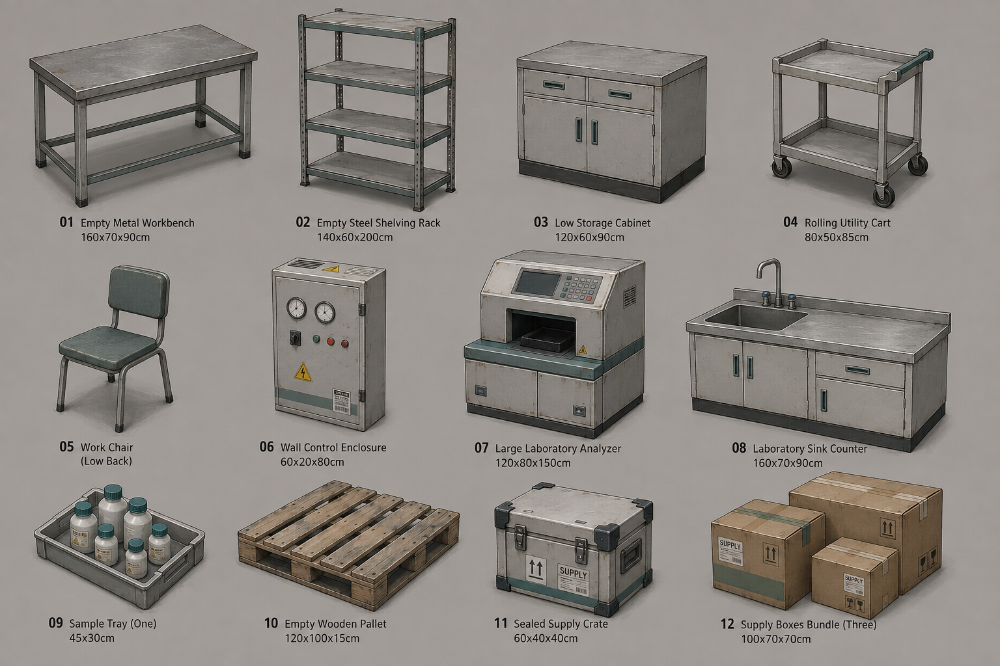
ImageGen concept reference — NOT a model renderImageGen 공유 아틀라스 / 원본과 프롬프트
컨셉 프롬프트 · 아틀라스 프롬프트 · 두 칸 수정 프롬프트